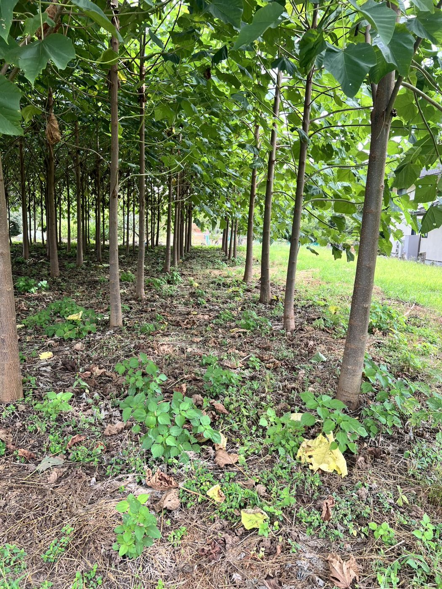
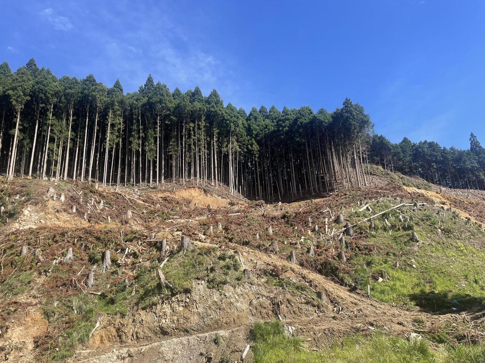
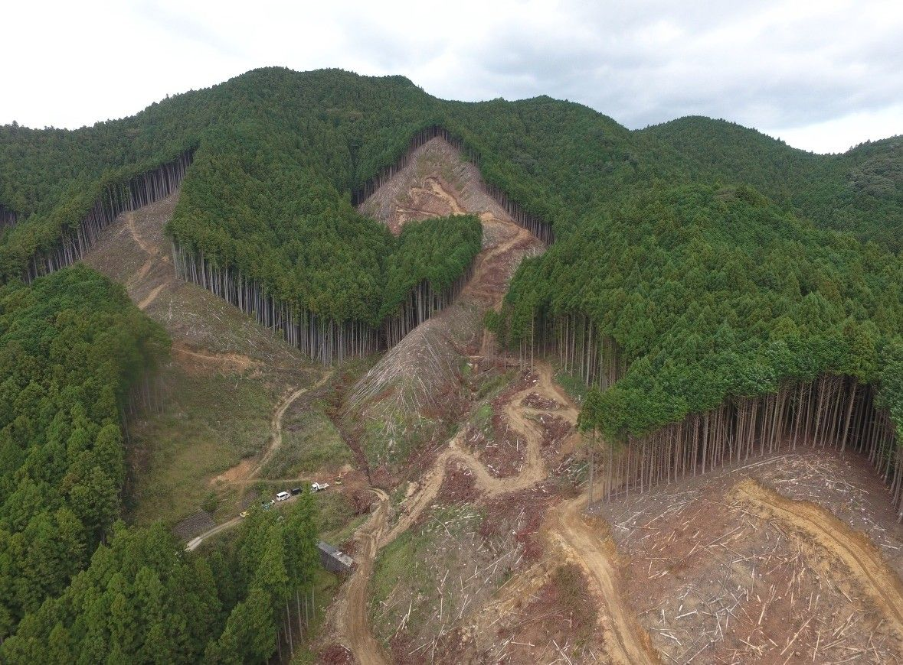
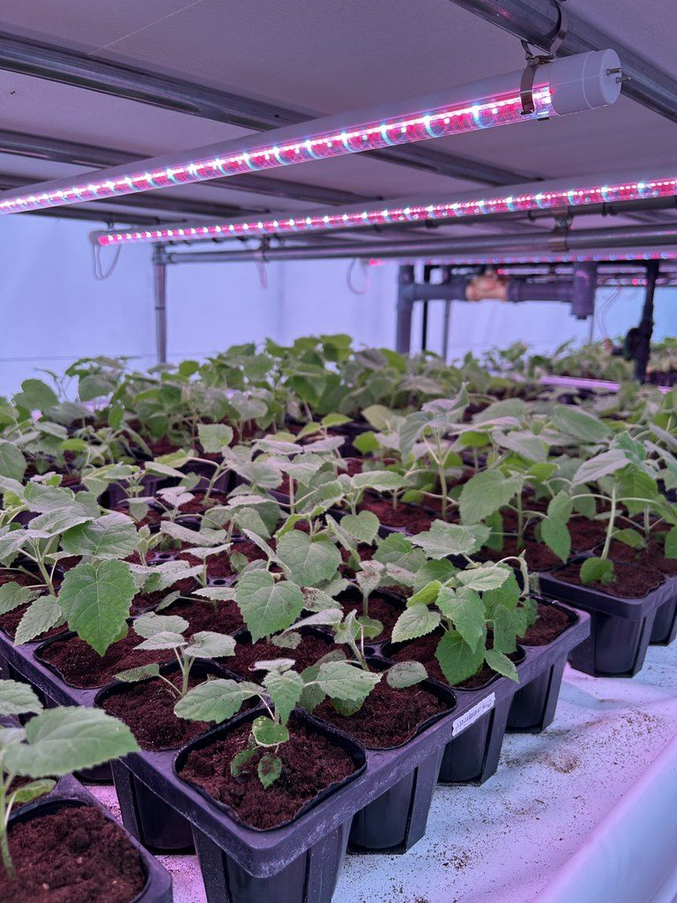
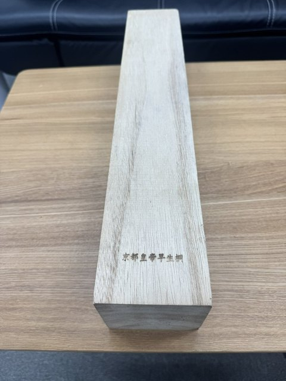
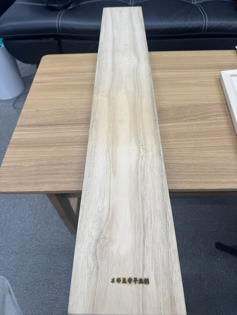
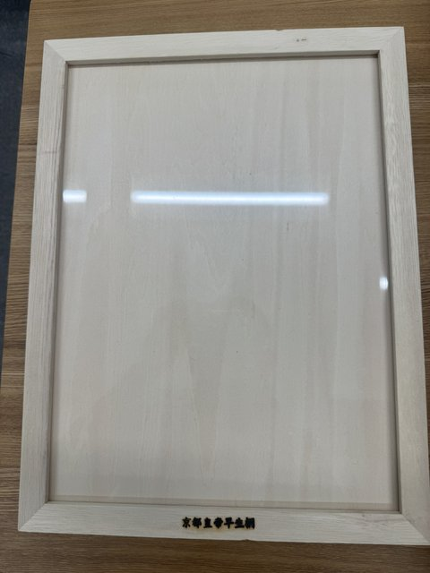
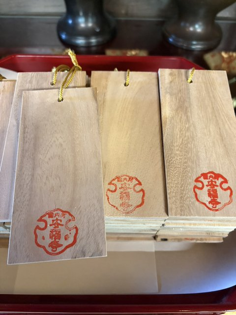
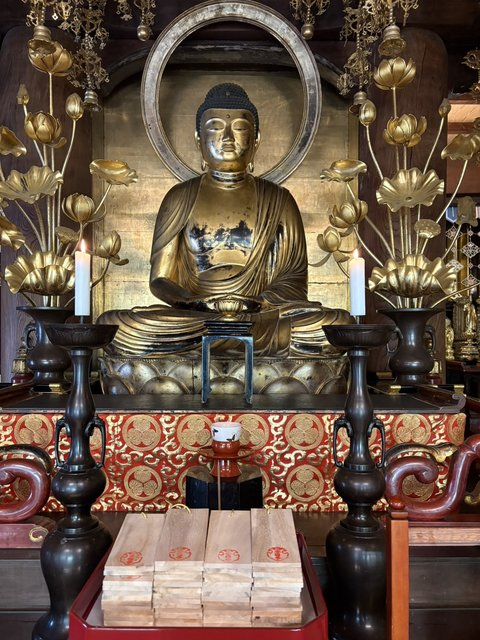
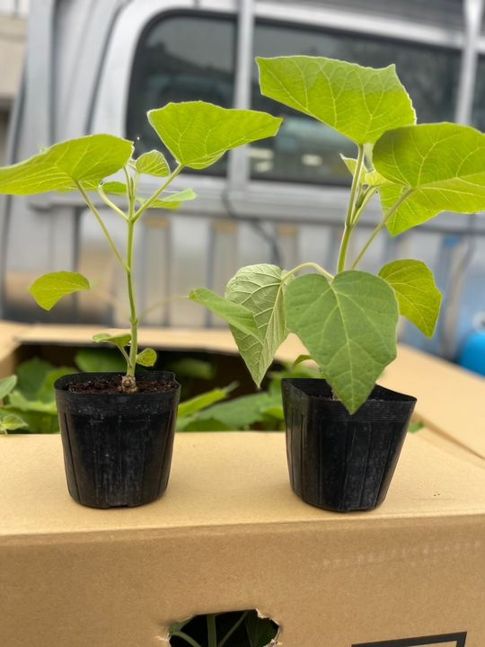

Paulownia Forest for Business
京都皇帝早生桐の山林 木材を大量にお使いの企業さまへ 同じ山から、 5年ごとに 木材を。
植林と手入れを終えた京都皇帝早生桐の山を、
山ごとお譲りします。
- 01植えて5年で成木になる
- 02伐っても植え直さず、また生える
- 03植林・手入れを終えた状態でお渡し

大分県豊後大野市の試験圃場・林の中。植えて1年3か月（2026年8月撮影）

Problem いま、こんなことは
木材の調達、 先まで見通せて いますか。
当社の山（奈良県御杖村・2023年9月、伐採中）
- i必要な量の木材を、この先も安定して確保できるか不安がある
- ii仕入れ値が相場に左右され、計画が立てにくい
- iii山を持っても、伐った後は植え直して何十年も待たなければならない
植え直した山が、また伐れるまで
出典：林野庁「森づくりの理念と森林施業」第2部 ── 標準伐期齢（主伐時期の目安として市町村森林整備計画に定められた林齢）は「概ねスギで35〜50年、ヒノキで45〜60年」
Solution こたえ
自社の山から、 繰り返し木材を。
京都皇帝早生桐は、伐った後も根から萌芽して再び育ちます。一度山を持てば、植え直さずに同じ山から繰り返し木材を取れます。
Cycle 山の巡り
植え直さずに、同じ山がまた育つ。
- 0お渡し時植林・手入れを終えた山
- 5年植林から5年
1回目の伐採 - 10年萌芽して、
2回目の伐採 - 15年萌芽して、
3回目の伐採 - 以降5年ごとに
繰り返し
日本の気候で育てた記録は、いちばん古いもので3年です。伐採を重ねた実績は、これから積み上げていきます。
01 — Growth
3年の実績と、5年目の目安
- 高さ
- 8m
- 幹回り
- 72cm
直径にすると、約23cm。
徳島県吉野川市（開発者の圃場）での実測。当社資料（2026年8月）に記録。
- 幹回り
- 約120cm
- 直径にすると
- 約38cm
3年間の平均の太り方（1年あたり幹回り24cm）が5年目まで続いた場合の計算です。実測ではありません。

ほかの圃場の記録
もとは、15年以上
使われていなかった田んぼ。
大分県豊後大野市の試験圃場は、長く放置された休耕田でした。土の対策をして、2025年5月15日に植えています。
- 3か月半2025年8月31日、すべての木が1.7mを超え、大きいものは3mに
- 1年高さ5〜6m
- 1年3か月2026年8月の姿（写真）
当社の記録（植えた日から月ごとに写真と作業を記録）
ほかの場所でも
- 京都府植えて2年で高さ7m・幹回り46cm
- 北海道札幌市2025年夏に植え、2026年6月時点で高さ2m
当社資料（2026年8月）より。育ち方は、土づくりと気候で変わります。
02 — Regrowth
伐っても、植え直し不要
伐採後は根から萌芽して、再び成木に育ちます。植え直しの費用と手間がかからず、同じ山がそのまま次の木材を生みます。
萌芽（ほうが）── 伐った切り株の根もとから、新しい芽が伸びてくること。

03 — Ready
植林と手入れを終えてお渡し
植えるところから日々の手入れまで、私たちが育ててきた山を、そのままお渡しします。山づくりの手間なく、木材の調達を始められます。
伐って、地拵えをして、植える。その山づくりを、私たちは自分の山で手がけてきました。
04 — Clone culture
自社開発・クローン培養の苗
自社で研究開発した品種を、クローン培養で増やした苗を植えています。一本一本が、同じ性質を受け継いだ苗です。




成長力が高い
1年あたりに幹が太る幅（地上1.3mの直径）
当社分は自社の実測（幹回りを円周率で割って直径に換算）。海外は公開されている研究の値。（ ）は調査年数。当社資料（2026年8月）より。
Uses 使われ方
桐材は、暮らしの中で使われてきた木。
軽く、狂いが少なく、湿気を通さない。古くから家具や建材として重宝されてきました。





お寺の七夕に。
当社の桐で短冊を300枚つくり、お寺に寄付しました。

幹だけでなく、花は香水、葉は女性用育毛剤の原料にも。
桐は捨てるところがない木です。
※花・葉は、原料として使われている例のご紹介です。効能・効果をうたうものではありません。
Offer ご提供
山のご案内は、商談の場で。
ご案内できる山は順次増えています。必要な木材の量や用途を伺い、合う山をご提案します。
- i山の所在地・面積・本数商談の際に、現在ご案内できる山をお伝えします。
- ii現地のご視察実際の山をご覧いただけます。
- iiiお渡し後のご相談伐採・運搬・手入れのご相談に応じます。
Flow 流れ
お問い合わせからお渡しまで
- 1Step 1商談のお申し込み下のフォームか、お電話でどうぞ。
- 2Step 2必要な量・用途のお伺いお使いになる量と用途を伺います。
- 3Step 3山のご提案現在ご案内できる山から、合う山をお伝えします。
- 4Step 4現地のご視察実際の山をご覧いただけます。
- 5Step 5ご契約・お渡し植林と手入れを終えた山をお渡しします。
For you このような企業さまへ
ハウスメーカー、工務店、製材・木材会社、家具メーカーなど、木材を大量にお使いの企業さまへ。

お届けしている苗（ポット苗）
苗は1本から
ご自身の土地に、
植えたい方へ。
Q&A よくある質問
よくある質問
山はどこにありますか？
商談の際に、現在ご案内できる山の所在地をお伝えします。
どのくらいの広さから購入できますか？
面積の単位・最小の区切り
お渡しの時点で、木は何年目ですか？
お渡し時の樹齢
伐採や運搬は誰が行いますか？
お渡し後も、伐採・運搬のご相談に応じます。
Contact 商談のお申し込み
商談を申し込む
必要な木材の量や用途が固まっていなくても、ご相談いただけます。山のご案内は、商談の場でお伝えします。
電話で相談する（TEL・FAX）075-748-9188